Contents
clc; clear all; close all; clear sound;
OHT-1 Assignment
Submitted to: Dr. Ahmad Salman
Student Credentials
Muhammad Haris Rehman _____ Reg. No. 182797 _____ Class: BEE-8D ______ NUST, SEECS
Read Image
The maximum frequency present in the signal is 1 bin/sample. if we look at it in normallized frequency, it is pi rad.
original = imread('r.png'); original_bw = rgb2gray(original); figure; imshow(original_bw); % signal image signal = reshape(original_bw, 1, 768*1366); % spectrum of signal L = length(signal); Fs = L/(L/2); NFFT = 2^nextpow2(L);% Next power of 2 from length of y Y = fft(signal, NFFT)/L; f = Fs/2*linspace(0,1,NFFT/2+1); % Plot single-sided amplitude spectrum. figure, plot(f, 2*abs(Y(1:NFFT/2+1))),grid on title('Single-Sided Amplitude Spectrum of original signal') xlabel('Frequency (bin/pixel) x pi')
Warning: Image is too big to fit on screen; displaying at 67%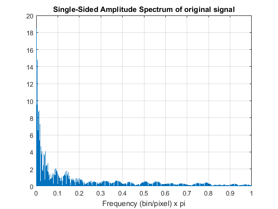
Butterworth filter
We apply butter worth filter to cut off the highest 5% frequencies from the signal to smoothen the signal, sharpens the edges and avoid aliasing while further processing.
n = 4; f = 0.95; [zb,pb,kb] = butter(n, f,'s'); [bb,ab] = zp2tf(zb,pb,kb); [hb,wb] = freqs(bb,ab,4096); figure, plot(wb/(f*pi),mag2db(abs(hb))), grid % Butterworth filter response title('butter worth response') %apply butterworth filter Fc = 0.95; [b, a] = butter(4, Fc/(Fs/2)); filterd_signal = filter(b, a, double(signal)); % Filtered Signal figure, plot(filterd_signal) title('Filtered Signal') % spectrum of filtered signal L2=length(filterd_signal); NFFT2 = 2^nextpow2(L2);% Next power of 2 from length of y Y = fft(filterd_signal, NFFT2)/L2; f = Fs/2*linspace(0,1,NFFT2/2+1); % Plot single-sided amplitude spectrum. figure, plot(f,2*abs(Y(1:NFFT2/2+1))),grid on title('Single-Sided Amplitude Spectrum of filtered signal') xlabel('Normallized frequency "w" (x pi)') % Filtered image filterd_image = reshape(int8(filterd_signal), 768, 1366); figure; imshow(filterd_image) title('filtered image')
Warning: Image is too big to fit on screen; displaying at 67%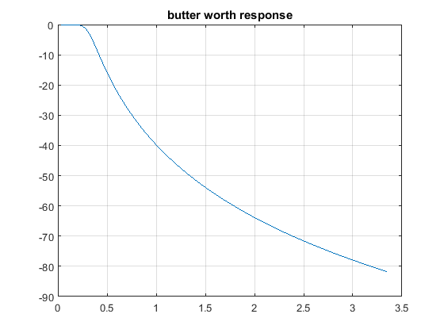 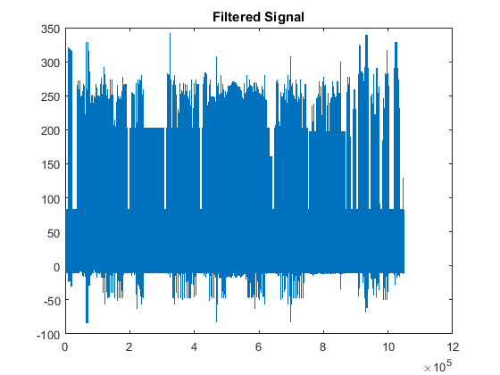
Sampling through Zero Order Hold
In this section, the sampling is done at T = 3, and every third signal is picked up to construct sampled signal. While selecting the value of T, one thing should be kept in mind that there should not be aliasing. I.e. Nyquist criteria should be satisfied. The zero Order Hold Filter is applied to generate the samples lost by sampling. It takes a sample and holds it fot T = 3. at the end of this section, a few samples are shown, showing that, the signal is already quantized as im using the int8 data-type.
S = 3; % at T = 3 sampled_image = filterd_image(1:S:end,1:S:end); figure, imshow(sampled_image) title('sampled image') % sampled discrete time signal sampled_signal = reshape(sampled_image, 1, 256*456); figure, plot(sampled_signal) title('sampled discrete time signal') % its spectrum L = length(signal); Fs = (L/(L/2)); NFFT = 2^nextpow2(L);% Next power of 2 from length of y Y = fft(signal, NFFT)/L; f = Fs/2*linspace(0,1,NFFT/2+1); % Plot single-sided amplitude spectrum. figure, plot(f, 2*abs(Y(1:NFFT/2+1))),grid on title('Single-Sided Amplitude Spectrum of sampled signal') xlabel('Normallized frequency "w" (x pi))') % Zero Order Hold L = length(sampled_image); nn = ceil((0.999:1:S*L)/S); xhold = sampled_image(:,nn); L = size(sampled_image); nn = ceil((0.999:1:S*L(1))/S); ZOH_image = xhold(nn,:); figure, imshow(ZOH_image) title('zero order hold image') % C/D conversion d_image = ZOH_image(1:S:end,1:S:end); figure, imshow(d_image) title('discrete image') % sampled discrete time signal d_signal = reshape(d_image, 1, 256*456); figure, plot(d_signal) title('discrete time signal') % Spectrum % Spectrum of reconstructed signal L = length(d_signal); Fs = (L/(L/2)); NFFT = 2^nextpow2(L);% Next power of 2 from length of y Y = fft(double(d_signal), NFFT)/L; f = Fs/2*linspace(0,1,NFFT/2+1); % Plot single-sided amplitude spectrum. figure, plot(f, 2*abs(Y(1:NFFT/2+1))),grid on title('Single-Sided Amplitude Spectrum of discrete signal') xlabel('Normallized frequency "w" (x pi))') % showing afew samples d_signal(89581:89611)
Warning: Image is too big to fit on screen; displaying at 67%
ans =
Columns 1 through 15
0 0 0 0 0 0 0 0 0 0 42 55 50 50 89
Columns 16 through 30
38 75 47 45 61 79 66 82 68 78 72 74 75 72 76
Column 31
72
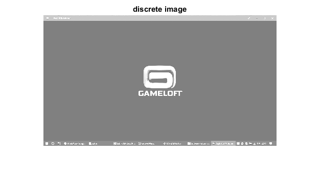 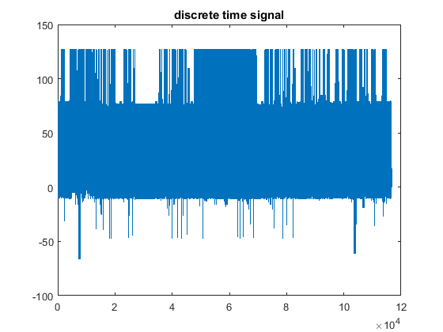 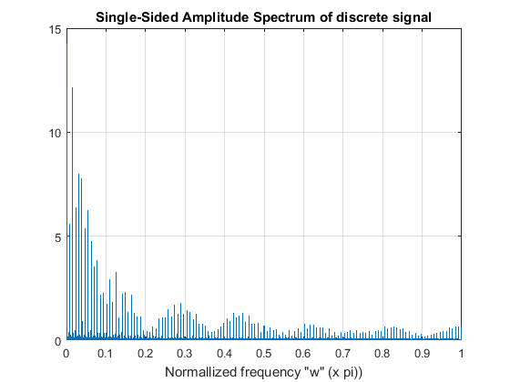 Convolution with h[n]
In this step, the signal is convolves with the h[n] to generate x(tilta)[n]. then, which is added to x[n] to generate y[n].
h = [-2 4 -2]; x_ = conv(double(sampled_signal), h); x_1 = 2:length(x_)-1; % x tilta of n x_1(1:end) = 0; x_1 = x_(2:length(x_)-1); y = sampled_signal; y(1:end) = 0; y = x_1 + double(sampled_signal); figure; plot(y) title('convolved signal') % Convolved image Convolved_image = reshape(int8(y), 256, 456); figure, imshow(Convolved_image) title('Convolved image') % spectrum L = length(y); Fs = L/(L/2); NFFT = 2^nextpow2(L);% Next power of 2 from length of y Y = fft(y, NFFT)/L; f = Fs/2*linspace(0,1,NFFT/2+1); % Plot single-sided amplitude spectrum. figure, plot(f, 2*abs(Y(1:NFFT/2+1))),grid on title('Single-Sided Amplitude Spectrum of convolved signal') xlabel('Normallized frequency "w" (x pi)')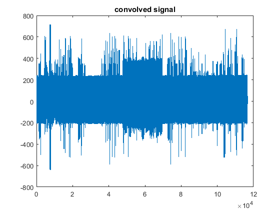 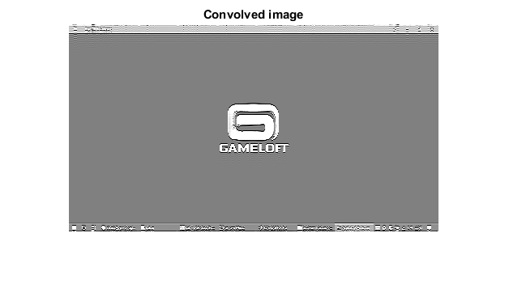 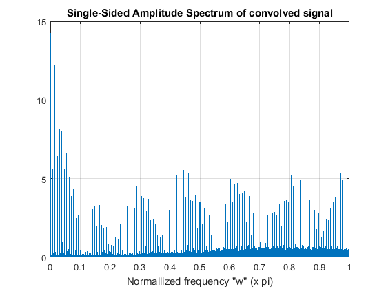
Reconstruction
Reconstruction Filter is just the low pass filter having the cut off frequency from -pi to pi. As in matlab, the signal is already the discrete time signal and the spectrum is shown from -pi to pi. so, I am using the butterworth filter of cut off at 0.9pi.
Fc = 0.9; [b, a] = butter(4, Fc/(Fs/2), 'low'); reconstructed_signal = filter(b, a, double(y)); figure, plot(reconstructed_signal) title('reconstructed signal') % Butterworth filter response n = 4; f = 0.9; [zb,pb,kb] = butter(n, f,'s'); [bb,ab] = zp2tf(zb,pb,kb); [hb,wb] = freqs(bb,ab,4096); figure, plot(wb/(f*pi),mag2db(abs(hb))), grid % Butterworth filter response title('butter worth response') % Spectrum of reconstructed signal L = length(reconstructed_signal); Fs = (L/(L/2)); NFFT = 2^nextpow2(L);% Next power of 2 from length of y Y = fft(reconstructed_signal, NFFT)/L; f = Fs/2*linspace(0,1,NFFT/2+1); % Plot single-sided amplitude spectrum. figure, plot(f, 2*abs(Y(1:NFFT/2+1))),grid on title('Single-Sided Amplitude Spectrum of reconstructed signal') xlabel('Normallized frequency "w" (x pi))') % reconstructed image reconstructed_image = reshape(int8(reconstructed_signal), 256, 456); figure; imshow(reconstructed_image) title('reconstructed image')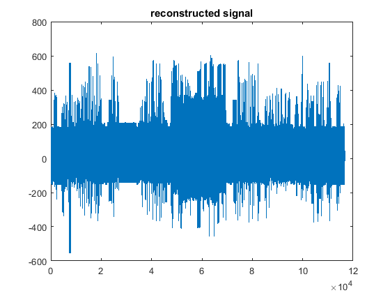 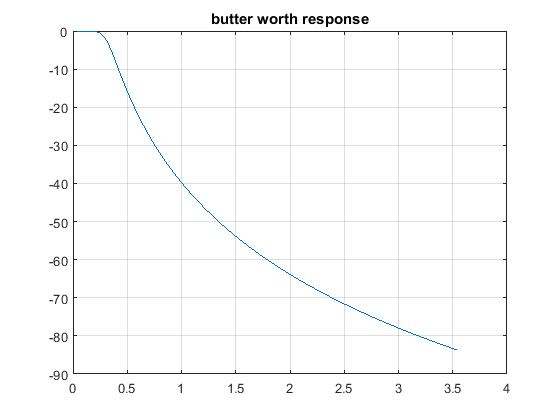 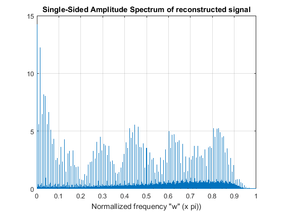 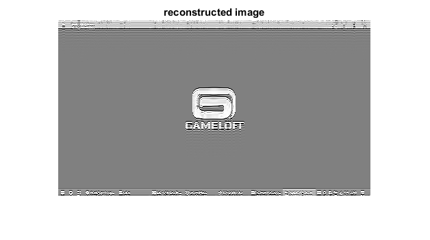
References
% https://www.mathworks.com/help/signal/ref/butter.html % Lab 3: Sampling and Reconstruction % Lab 7: Digital Images A/D and D/A % https://www.mathworks.com/help/matlab/matlab_prog/marking-up-matlab-comments-for-publishing.html